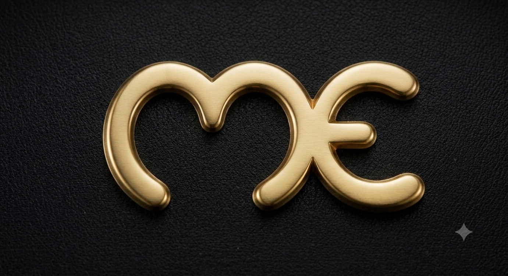

Couteaux fabriqués à la main · Pièces uniques
À Thiers, capitale française de la coutellerie depuis le Moyen Âge, l'art de forger le métal se transmet de génération en génération. C'est dans ce berceau de l'excellence que l'atelier Ewen-M prend racine, perpétuant un savoir-faire pataud avec un regard tourné vers la création contemporaine.
Chaque couteau naît d'un dialogue entre le feu, l'acier et la main. Du choix du métal brut à la dernière finition du manche, chaque geste est réfléchi, chaque courbe pensée. Rien n'est laissé au hasard.
Fabriquer un couteau, c'est donner une âme au métal. Chaque pièce porte en elle l'empreinte de la main qui l'a créée.
Formé dans la tradition thiernoise, Ewen a consacré sa vie à la coutellerie d'art. Après des années à perfectionner son geste auprès des grands maîtres de la forge, il a créé son propre atelier où chaque lame est une signature, chaque manche une œuvre singulière.
Sa philosophie : allier la rigueur de la tradition à une sensibilité esthétique contemporaine. Chaque couteau qu'il forge est à la fois outil de précision et objet de collection, fait pour durer des générations.
Du choix de l'acier à la finition du manche, chaque paramètre peut être personnalisé pour créer un couteau à votre image. Aciers inoxydables ou damas, bois précieux ou carbone, mitres bronze ou damas, ressort guilloché — votre sensibilité est l'unique limite.
Explorer les personnalisationsEwen-M-Atelier
Thiers, Puy-de-Dôme
Auvergne-Rhône-Alpes
France
ewenm.atelier@gmail.com
+33 (0)6 00 00 00 00
Sur rendez-vous uniquement
@ewenm.atelier — Instagram
EwenM.Atelier — Facebook
Photos, actualités, autres créations